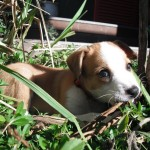
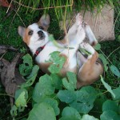

Tennis Training
Roxy continues to amuse and entertain and be lovely.
She’s still very friendly and excited to meet people and this pleases me.
We’re giving her training sessions each day before each meal.
In the mornings, evenings, and weekends this means me and puppy mummy.
We stand at opposite ends of the study/lounge/kitchen area and take turns calling her to us for some training goodness.
Like a game of dog tennis.
It is awesome.
At the moment we’re doing Sit, Stay, Down.
Roxy is clever! The dog books / sites do not lie! Training is fun!
Being a puppy daddy is happy making.
Sad Face
On Friday last week I had a meeting thing at 10 and another at 2.
I thought I’d have at least an hour between them for some eating, weeing, and playing (for Roxy and for me).
My 10 ran over bigtime, and I practically had to run in, feed her, run out. And I was still ten minutes late for the 2 meeting!
I felt like a very bad puppy daddy. 
And I had separation anxiety while I was out, never mind her!
An an antidote, have some pictures of Roxy acting a bit mad in the garden: 

{kind=link}
{kind=link}
{kind=link}
Don’t be a pussy
In other news, she appears to be learning to fight / play like cat.
She copies Sproing’s one paw punch.
We saw it in action a lot yesterday when we went to visit Anna and her very well behaved, but very energetic, Border Collie – Maneo.
It’s very interesting to watch Roxy’s reactions to other dogs.
She spent the fist hour hiding under the couch and yelping a lot.
She spent the last hour climbing over his face and biting his ears.
She slept very, very, well last night!